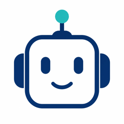

Talk to a tutor, hands-free, on a walk
The walk becomes structured memory
Concept cards, quiz, sources, images
Read it, hear it, question it later
Every walk becomes a structured Notion page you own, can organize, search, and take anywhere.
The lesson writes itself (summary, cards, quiz, sources, image), and because it is your Notion and your code, you decide how it is built.
Swap in any model, and reuse the same memory across your other projects. Never locked to one vendor.
Capture and teach. One conversation becomes a lesson you keep.
Everything you read, watched, coded, and learned, synthesized into a weekly review you listen to and question on a walk.
Cross-source insight: what you consumed shaped what you created. A coach that surfaces the right lesson before you need it.
Your second brain: a personal AI that has learned your whole intellectual journey and compounds it, owned by you.